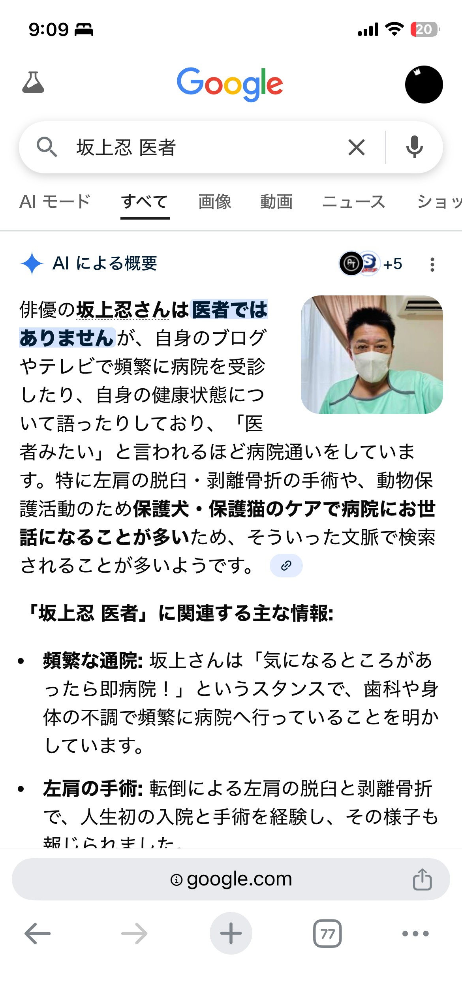

面白い夢を見たらメモしておくようにしてるのでその一部を上げてみることにしました
みのわ
【殿堂入り】2026/1/16 坂上忍の研修医時代のエピソード
芸能人のインタビュー本を読む夢をみた。装丁は絵本のようなサイズでかなり古く、芸能人の写真がたくさん載っている。昔、彼らの楽屋で行われたインタビューの記録本。
インタビューされていたのは、坂上忍・黒柳徹子・氷川きよしなど。これはシリーズの2巻目、夢は文字を読んでページを捲ることで進む。
特に印象深かったのは坂上忍の章。かなりいいところの家の生まれで、小さい頃から医者になるための教育を受ける。若い頃の写真が美男子。大学時代にヨーロッパのどこかへ留学に出る。しかし街が綺麗だ街が綺麗だと思っている内に留学が終わっており、帰国してから大泣きしたらしい。東京に戻ってからは、散歩をよくするようになったが度々街中で留学先と同じような道を見つけることがあった。ある日、坂上は留学先で一番お気に入りだった道に酷似している道を発見する。それは研修医として実習先に向かう際に、先輩の後ろについて列になって歩いた道にそっくりだった。曲がりくねった山道で先は見えづらい。しかしもうしばらく歩くと小川が見え、光の差す道。東京にいるはずなのにその道によく似ていた。多少違うところはあったがとてもよく似ていたため、迷い込む不安はありながらも記憶通り歩いていった。小川が見えるあたりまでは殆ど同じだったがある地点で完全に行き詰まった。そこで坂上は自分が東京に帰ってきたことを自覚して泣いたらしい。この話を受けてインタビュアーが、「きっと坂上さんの直向きな思いを神様が見ていたために起きた奇跡だったのかもしれません」という感じで結んでいて印象に残っている。この一件以降、この道を見つけることは決してなかったらしい。
あと氷川きよしは楽屋？というか自分の専用スペースがあってものすごいデコり方をしていて4千万円かけたと言う。インタビュアーが、この本を読み返すだけで4千円くらいは払いたくなりますねと言ってたけど、全部読み終わる前に起きた。
起床直後に撮ったスクリーンショット↓

2025/4/23 毎日が特売日
世界が終焉に近づいていて、日本語を話す人がもうほとんど残っていない世界で中学校の教室にいた。ぼんやりと座っていたら中学の時の担任が廊下を通りすぎてまだ生きてたんだ！！と思った。ぼんやりと窓の外を眺めると、向かいのスーパーが夕方の売り出しを始めたのか店員が旗を持ってきて旗たてに赤い旗をさした。よく見てみると「毎日が特売日」と書いてた。久しぶりに見る日本語だったからすごくびっくりして何度も旗の文字を読み返した。読み返してるうちにリズムも響きも本当に綺麗だと思ってきて涙が出た。
2025/4/25 小山田壮平が来る夢
市民清掃の後に小山田壮平来るからねって聞いて、公園でゴミ袋抱えて近所のおじちゃん、おばちゃん、犬、友達と待ってたら本当にきた。目の前で時をかけるメロディーを歌ってくれて、後ろみたら夕方で花火が上がって、最後にお土産だよって言ってみんなに英検準一級の問題集渡して帰ってった。
2025/5/27 カニクリームコロッケ
夕焼けをカニクリームコロッケに例えた詩を読んで感動する夢
2025/6/18 あいみょんとふんどし一丁になる夢
あいみょんとふんどし一丁になってインド象の上に乗っていた。象には鈴とかがいっぱいついてて歩く度にシャンシャンといった。下にもふんどしを占めた人がたくさんいてでっかい太鼓を叩いていた。パレードしてた
2025/8/14 藤子・F・不二雄になる夢
夢の中で藤子・F・不二雄だった。プレッシャーに押し潰されそうになりながら必死にドラえもんの漫画を描いていた。のび太の部屋そっくりの場所で机の正面が窓になってた。
いい漫画が思い浮かばなくてみんなの期待に応えなきゃって必死で、逃げ出したくなってたらタケコプターをつけたのび太が窓辺にやってきて手を引いて外に連れ出してくれた。帰省した時に漫画の話してる朝ドラ見てたからだと思う。
2025/10/4 寝相の悪いおじいちゃん
寝てる時に暑かったので、頭と足の場所を反対にひっくり返ったら、夢の中の師匠的なおじいちゃんが「ほほほ、そのひっくり返り方ワシもやるんじゃよー」って言ってくれた。こんな老人でもこれやるんだ！って俄然自信が湧いてきて、そのまま変な寝方したから寝違えた。
2025/10/19 歩けないおじいちゃん
魔法が使えるけど小石と一緒に網に入ってて人に運んでもらわないといけないせいで見下されてるおじいちゃんがいた。いつも川辺にいるらしかった。それでそのおじいちゃんに観光案内をした。
2025/12/17 ルービックキューブの歯のおじいちゃん
師匠みたいなおじいちゃんがニコって笑ったら前歯がカラフルなルービックキューブだった。自分はこうなりたくないなーって思ったら、おじいちゃんが、「鏡みてみぃ」というので口を開けて鏡を見たら自分の奥歯もルービックキューブの色になってた。それで自分の顎をどうにかこねくり回して奥歯の色をそろえた。
（ルービックキューブにハマってた時期）
2026/2/11 パン屋を継ぐ夢
将来どうしようと思いながら馴染みのパン屋に入ると、パン屋を継がないかと言われた。もう自分にはこれしかないと思って弟子入りし、毎日必死にパン屋の修行をした。特に窯の中にある食パンを、でっかいピザ窯用のヘラみたいなので取り出す訓練に力を入れさせられた。スッとパンの下に差し込んでサッサっと動かしてパン取り出していると、ヘラが重くて窯が熱くてだんだん手が痛くなってきたけど、パン屋を継ぐため、食っていくためと言い聞かせて頑張った。
痛みで目が覚めると毛布の下で手が汗でびっしょりになっており腱鞘炎になっていた。
2026/9/2 韓国の伊津部小学校（母校）
韓国のバスツアーに参加していたら青い建物が見えてきてバスガイドが「ここは中学校です」と言った。よく見てみると青くて丸い外観に蝶の絵が描いてあって伊津部小学校そのままだった。
学校の中にはいると歩道橋から保健室や図書室までの道、蝶の絵が描いてる部分の構造、音楽室や理科室のとこ、給食室のあたりまで完全に同じ建物だった。でも掲示とかは韓国語だし卒業記念で壁に書いてあった絵もなかったのでやっぱり別の学校だった。韓国の寒い地域の学校だったため廊下が凍っていて、音楽室とかのある建物の前の外廊下で数人がスケートをしてた。
坂になってるところに紐で繋がれた冊子があって伊津部小学校とナントカ中学校の戦争と書いてあった。それぞれの学校は建設会社から非常にユニークで唯一無二の構造と言われて丸い構造と青い外壁を選んだ。斬新でとても気に入ってたのに、ある日別の国に自分たちとそっくりの学校があると知って、プライドをかけて戦争したらしい。でも本物の学校って一体なんだろうってなって、仲直りした、と書いてあった。
なんか見た目がそっくりだけどちょっと違うって言う気持ち悪さ、パラレルワールドに来たみたいだった。